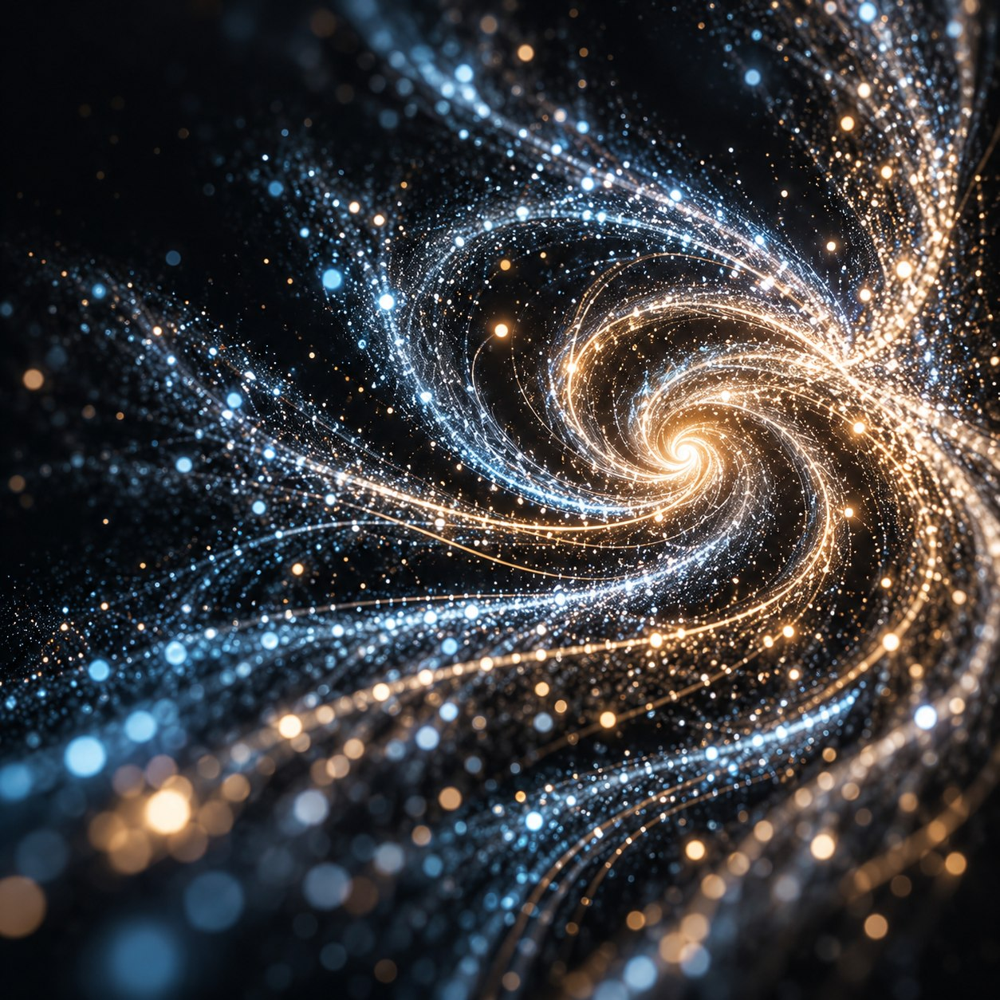

EMISSION & LIFE
每个粒子，都有自己的节奏。
控制发射、生命周期与随机变化，用随生命变化的大小、透明度和颜色塑造细节。
A PARTICLE SYSTEM FOR AFTER EFFECTS
从一个点，到一整个宇宙。
用节点连接创意，在熟悉的 After Effects 中
塑造属于你的粒子世界。

01 — CONNECT YOUR IDEAS
发射、塑形、施加力，再输出。
让每一步创作，都有清晰的来路。
在节点画布中连接 Emitter、Particle、Force 与 Output，直观整理创作逻辑。
在 AE Effect Controls 中调整参数、关键帧、曲线与渐变，让粒子融入现有动画流程。
通过独立预设面板保存、应用与导入导出预设，继续发展你的粒子系统。
02 — SHAPE THE POSSIBILITIES
从出生到消散，从方向到形态。
一步步，找到你想要的表达。
EMISSION & LIFE
控制发射、生命周期与随机变化，用随生命变化的大小、透明度和颜色塑造细节。
FORCES & MOTION
通过 Force、Transform、Motion 与 Turbulence 节点，探索方向、空间变换和运动变化。
FORM & MATERIAL
使用粒子纹理、Model 与基础 Material 工作流，为粒子系统加入更丰富的视觉层次。
以上图形为功能概念插画；具体功能与验证范围以项目文档为准。
03 — MAKE SOMETHING YOURS
IN DEVELOPMENTStarfield 正在持续开发，源码已开放。
欢迎了解项目、参与构建，
或把你的使用体验与想法带给我们。
04 — A FEW THINGS TO KNOW
Starfield 是独立实现的 After Effects 粒子插件。通过节点画布组织系统，在 AE 原生 Effect Controls 中编辑参数，并通过独立预设面板管理预设。
项目目前仍处于开发阶段，本站尚未提供正式安装包。你可以在 GitHub 查看源码与构建说明；对外版本以仓库实际发布信息为准。
当前开发与验证范围是 Windows x64 和 After Effects 2023。macOS、其他 AE 版本及具体硬件的兼容性尚未在此承诺。部分功能仍有宿主实测待办，构建成功不代表全部场景已经验证。
首页主视觉是参考插件预设主图生成的概念图片，加入缓慢漂移、轻微呼吸缩放与星光明灭；节点区复用插件画布 UI，但操作仅保存在当前网页内存中，不提交到 AE，也不生成粒子。功能插画为网页示意，不代表实际渲染或性能。
可以通过 GitHub Issues 提交问题或建议。反馈时请提供 AE 版本、复现步骤和必要截图，并先移除工程中的私人信息。源码使用 MIT 许可证；Adobe SDK 不随源码分发。